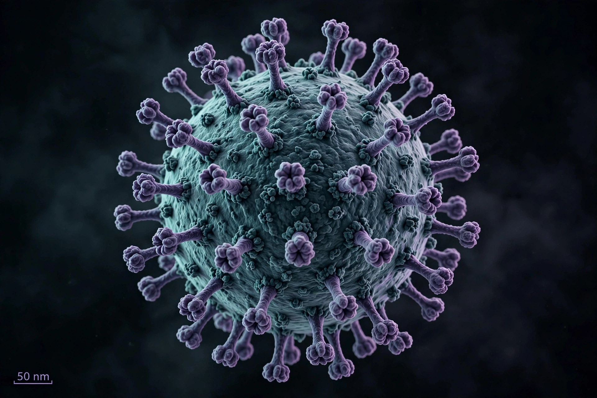

Virus
From Wikipedia, the free encyclopedia

Virus particle (image regenerated from memory)
A virus is a submicroscopic infectious agent that replicates only inside the living cells of an organism. Viruses consist of genetic material (DNA or RNA) inside a protein coat (capsid), sometimes with a lipid envelope, and infect all forms of life from animals and plants to bacteria (bacteriophages) and archaea.
Outside a host cell a virus particle (virion) is inert; whether viruses count as 'alive' is debated. They cause diseases from the common cold, influenza, measles and HIV/AIDS to COVID-19, and also drive evolution by transferring genes. Antiviral drugs and vaccines — not antibiotics, which act on bacteria — are the medical tools against them. The study of viruses is virology; tobacco mosaic virus, crystallised by Wendell Stanley in 1935, was the first virus characterised.
Classification
The Baltimore classification groups viruses by how they produce messenger RNA. Virus genomes may be single- or double-stranded DNA or RNA, linear or circular; mutation rates are high in RNA viruses, complicating vaccine durability (influenza drift, SARS-CoV-2 variants).
See also
Bacteria · Immune system · Vaccine · Influenza · HIV · COVID-19